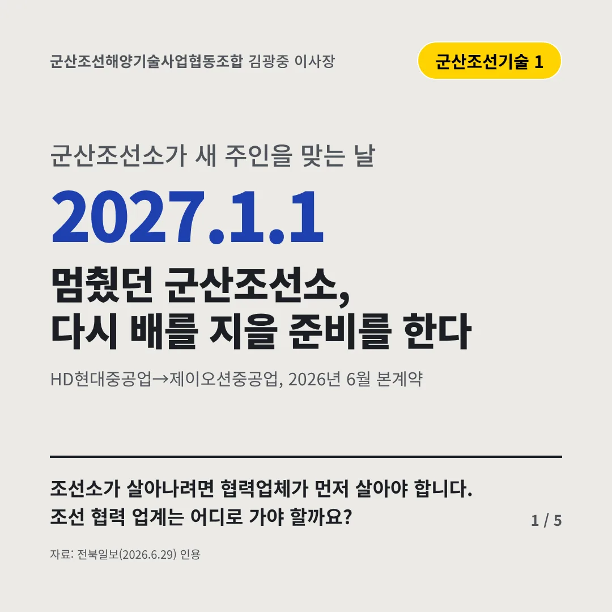
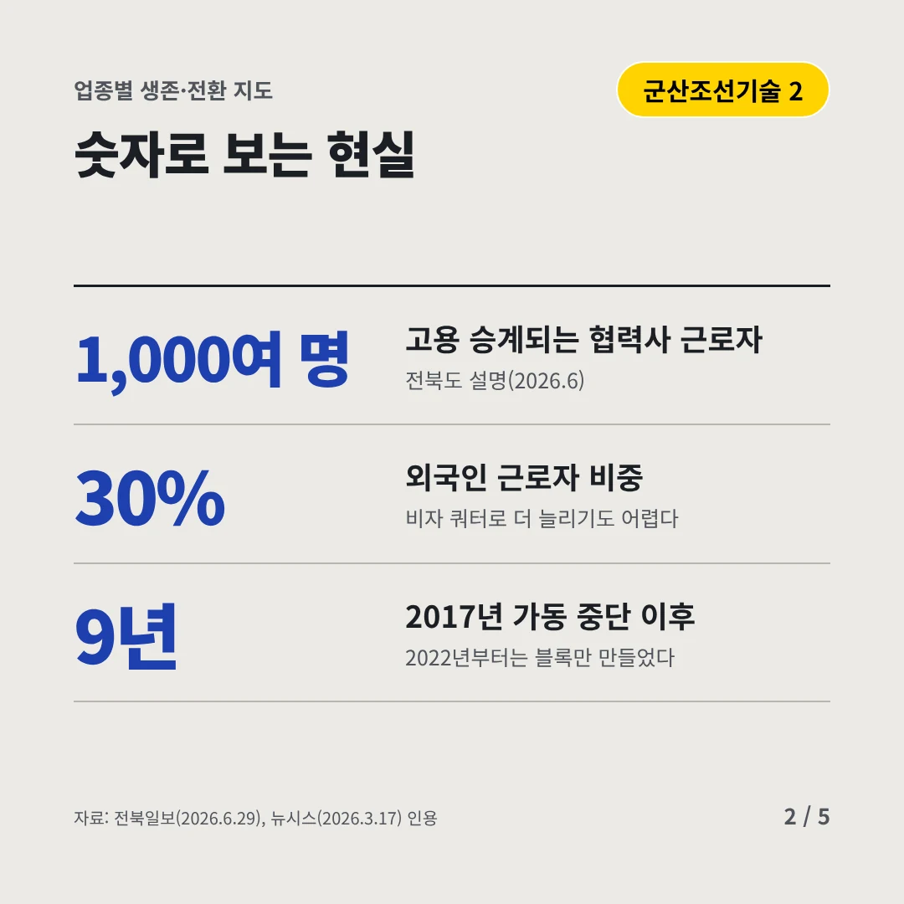
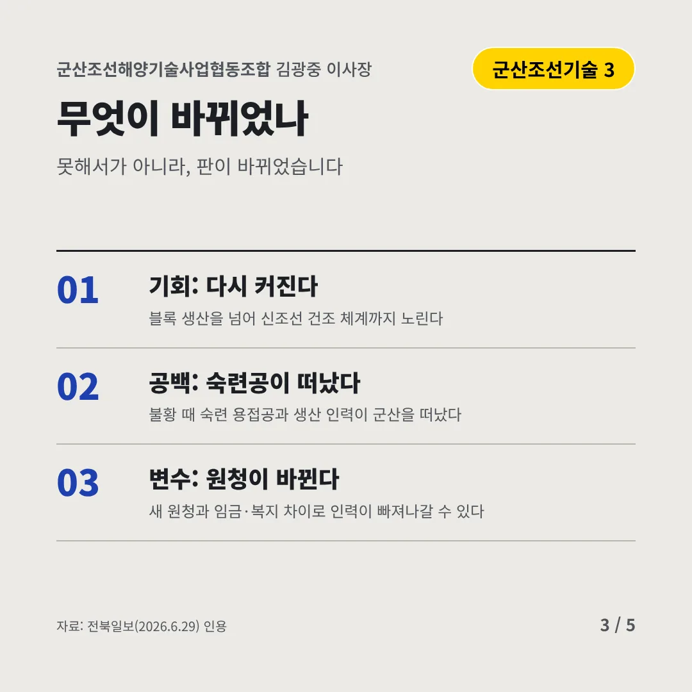
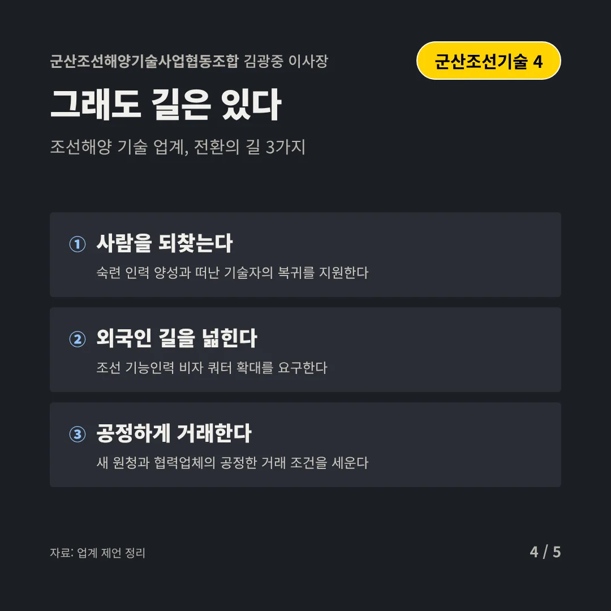
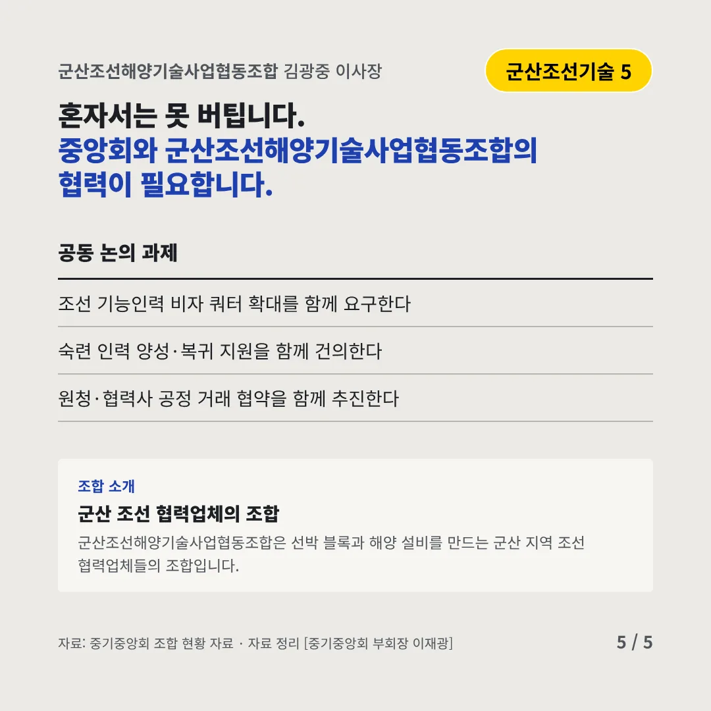
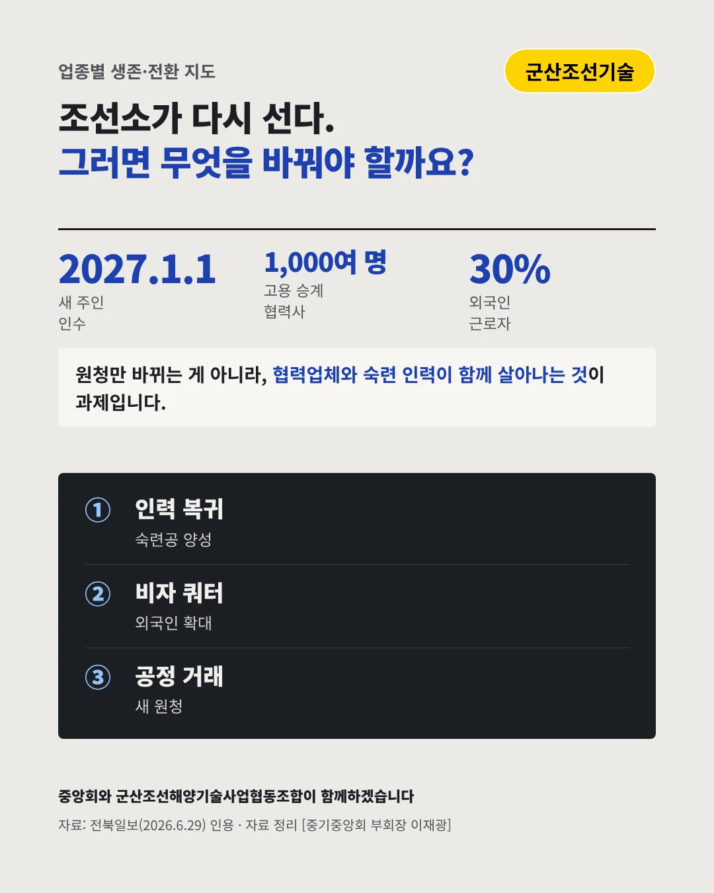

군산조선해양기술사업협동조합김광중 이사장
멈췄던 군산조선소, 다시 배를 지을 준비를 한다
2027.1.1 군산조선소가 새 주인을 맞는 날






조선소가 살아나려면 협력업체가 먼저 살아야 합니다. 조선 협력 업계는 어디로 가야 할까요?
숫자로 보는 현실
- 1,000여 명고용 승계되는 협력사 근로자전북도 설명(2026.6)
- 30%외국인 근로자 비중비자 쿼터로 더 늘리기도 어렵다
- 9년2017년 가동 중단 이후2022년부터는 블록만 만들었다
무엇이 바뀌었나
- 기회: 다시 커진다블록 생산을 넘어 신조선 건조 체계까지 노린다
- 공백: 숙련공이 떠났다불황 때 숙련 용접공과 생산 인력이 군산을 떠났다
- 변수: 원청이 바뀐다새 원청과 임금·복지 차이로 인력이 빠져나갈 수 있다
그래도 길은 있다
- 사람을 되찾는다숙련 인력 양성과 떠난 기술자의 복귀를 지원한다
- 외국인 길을 넓힌다조선 기능인력 비자 쿼터 확대를 요구한다
- 공정하게 거래한다새 원청과 협력업체의 공정한 거래 조건을 세운다
한 장 요약

조합 소개
군산조선해양기술사업협동조합은 선박 블록과 해양 설비를 만드는 군산 지역 조선 협력업체들의 조합입니다.
자료: 전북일보(2026.6.29), 뉴시스(2026.3.17)